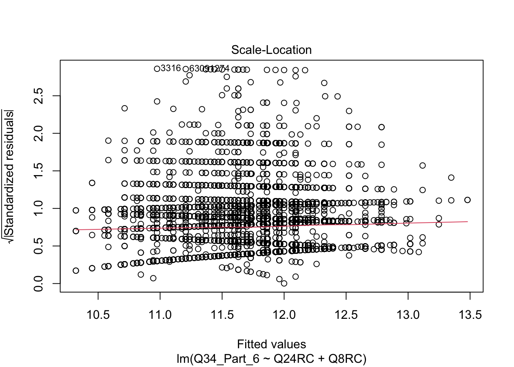

Code
library(tidyverse)
library(ggplot2)
library(dplyr)
knitr::opts_chunk$set(echo = TRUE)library(tidyverse)
library(ggplot2)
library(dplyr)
knitr::opts_chunk$set(echo = TRUE)The dataset I am using comes from Kaggle https://www.kaggle.com/datasets/kaggle/kaggle-survey-2018 and is a survey titled “2018 Kaggle Machine Learning & Data Science Survey” conducted by Kaggle to capture the current state of machine learning and data science usage, mainly at the enterprise and academic level. The dataset contains survey responses from almost 24,000 respondents from varying backgrounds. The survey contains 50 questions, including 9 demographic questions and 41 questions around machine learning and data science. The questions range from platforms and products used, and tools and methodology, barriers to entry, and more. It also asks respondents about their employee experience working in these fields. I believe that the wide array of types of questions used make this dataset a good fit for research, as there are binary and categorical variables to explore but also some that ask for explicit numeric values like what percentage of their work falls to different tasks. Having several different types of questions provide opportunities for multiple types of models to be performed.
This survey was also run in 2017, 2019, and 2020 on Kaggle as part of an annual competition where users could submit code and analysis using this public data. However, I decided to use the 2018 dataset as my focus because certain questions that I think would be really interesting to analyze were omitted in later years/the survey was shortened overall. This survey was hosted by Kaggle, open to anyone in the industry, for one week in October 2018.
Reading in the dataset –
final <- read_csv("_data/final_project_data.csv")Warning: One or more parsing issues, see `problems()` for detailsRows: 23304 Columns: 409
── Column specification ────────────────────────────────────────────────────────
Delimiter: ","
chr (347): Q1, Q2, Q3, Q4, Q5, Q6, Q7, Q7_RCSTUD, Q7_RCTECH, Q8, Q9, Q10, Q1...
dbl (58): Time from Start to Finish (seconds), Q1_OTHER_TEXT, Q6_OTHER_TEXT...
lgl (4): Q28_Part_22, Q29_Part_16, Q38_Part_19, Q38_Part_20
ℹ Use `spec()` to retrieve the full column specification for this data.
ℹ Specify the column types or set `show_col_types = FALSE` to quiet this message.head(final,10)# A tibble: 10 × 409
Time from…¹ Q1 Q1_OT…² Q2 Q3 Q4 Q5 Q6 Q6_OT…³ Q7 Q7_RC…⁴
<dbl> <chr> <dbl> <chr> <chr> <chr> <chr> <chr> <dbl> <chr> <chr>
1 959 Male -1 35-39 Chile Doct… Info… Other 1 Acad… Non-st…
2 1512 Male -1 18-21 India Bach… Comp… Stud… -1 Acad… Non-st…
3 848 Male -1 22-24 Denm… Bach… Engi… Stud… -1 Acad… Non-st…
4 2309 Male -1 30-34 China Doct… Other Rese… -1 Acad… Non-st…
5 1487 Male -1 18-21 China Bach… Comp… Stud… -1 Acad… Non-st…
6 790 Male -1 25-29 China Mast… Engi… Stud… -1 Acad… Non-st…
7 2986 Male -1 40-44 India Doct… Comp… Other 7 Acad… Non-st…
8 1255 Male -1 18-21 India Some… Engi… Stud… -1 Acad… Non-st…
9 825 Male -1 25-29 India Bach… Comp… Data… -1 Acad… Non-st…
10 1315 Male -1 18-21 India Bach… Engi… Stud… -1 Acad… Non-st…
# … with 398 more variables: Q7_RCSTUDY <dbl>, Q7_RCSTUDN <dbl>,
# Q7_RCSTUD2 <dbl>, Q7_RCTECH <chr>, Q7_RCTECH2 <dbl>, Q7_OTHER_TEXT <dbl>,
# Q8 <chr>, Q8RC <dbl>, Q9 <chr>, Q10 <chr>, Q11_Part_1 <chr>,
# Q11_Part_1RC <dbl>, Q11_Part_1RC2 <chr>, Q11_Part_2 <chr>,
# Q11_Part_3 <chr>, Q11_Part_4 <chr>, Q11_Part_5 <chr>, Q11_Part_6 <chr>,
# Q11_Part_7 <chr>, Q11_OTHER_TEXT <dbl>, Q12_MULTIPLE_CHOICE <chr>,
# Q12_Part_1_TEXT <dbl>, Q12_Part_2_TEXT <dbl>, Q12_Part_3_TEXT <dbl>, …Upon doing a cursory search around this data, I see some high level executive-summary style research published about this data set, but I wasn’t able to find anything focused on more specific research questions. It was more demographic data of the state of ML and Data Science. I think there is the opportunity to speak more specifically about the state of machine learning and data science, and look deeper at what tools students and employees are using versus what their time is devoted to.
Based on feedback from my part 1 of the final, I am narrowing down my area of focus. There is a huge amount of data within this dataset, but as this research is focused on performing regression modeling, I think the best fit for my main research question is as follows:
How does an individual’s background, experience, and time in their field/role impact what their day to day looks like?
I plan to use questions like “During a typical data science project at work or school, approximately what proportion of your time is devoted to the following?” to get exact numbers that I can correlate against demos and more general usage of tools and platforms to see if there is any connection between the work one does and the tools they use.
I am interested in this dataset because a lot of research in my career is in the machine learning space, so I am always interested in contextualizing the employee experience in these areas so that I can better understand the subject of some of my survey research. I also do more general employee engagement research in my career and I think this final is a great opportunity to try my hand at some of the correlations I would like to run at my job now but have never been able to because I don’t have any prior stats knowledge.
The hypothesis I would like to test is:
Those with more years of experience in machine learning/coding will spend a larger proportion of their time doing analyzing and decision making, as opposed to those newer to the job will spend more time cleaning data and doing actual coding.
The below variables are the ones I plan to consider using:
Independent variable: Q24 How long have you been writing code to analyze data?
Dependent variable: Q34_Part_6 During a typical data science project at work or school, approximately what proportion of your time is devoted to the following? (Answers must add up to 100%) - Finding insights in the data and communicating with stakeholders
The below variables could be used as confounding variables to the independent variable, or as alternative dependent variables to test that could give me opposite results to test essentially the second half of my hypothesis statement:
Confounding variable 1 - Q8 How many years of experience do you have in your current role?
Confounding variable 2 - Q25 For how many years have you used machine learning methods (at work or in school)?
Other alternative dependent - Q11_1 Select any activities that make up an important part of your role at work: (Select all that apply) - Analyze and understand data to influence product or business decisions
Other alternative dependent - Q23 Approximately what percent of your time at work or school is spent actively coding?
Other alternative dependent - Q34_Part_2 During a typical data science project at work or school, approximately what proportion of your time is devoted to the following? - Cleaning data
I described my dataset at the top of this as well as discussed variables of interest in the Research Question section, but here is a little bit of exploratory code to give a general feel for what the data looks like:
I can see the data contains mostly younger males, but because of the sample size can really work with lots of demographic combinations.
ggplot(final, aes(x = Q1)) +
geom_bar() +
labs(x="Gender")ggplot(final, aes(x = Q2)) +
geom_bar() +
labs(x="Age") +
theme(axis.text.x = element_text(angle = 45, vjust = 1, hjust=1))There is also a range of coding experience in the dataset.
ggplot(final, aes(x = Q24)) +
geom_bar() +
labs(x="Years of coding experience") +
theme(axis.text.x = element_text(angle = 45, vjust = 1, hjust=1))
The data is split between students, tech industry employees, and other industry employees.
ggplot(final, aes(x = Q7)) +
geom_bar() +
labs(x="Industry") +
theme(axis.text.x = element_text(angle = 45, vjust = 1, hjust=1))Here, I made a scatterplot showing where the amount of training from work meets the amount of time spent finding insights instead of cleaning data, coding, etc. I expected this to be much higher for those who received most or all of their training from work, but that isn’t the case.
ggplot(final, aes(x = Q35_Part_3, y=Q34_Part_6)) +
geom_point() +
labs(x="Percentage of machine learning training from work", y="Percentage of project time spent finding insights")Warning: Removed 7559 rows containing missing values (geom_point).
Hypothesis: Those with more years of experience in machine learning/coding will spend a larger proportion of their time doing analyzing and decision making, as opposed to those newer to the job will spend more time cleaning data and doing actual coding.
Since the variables are in text format in the survey, I recoded the ones needed into a numerical format that gives a corresponding number in ascending order to match the level of experience the respondent reports (i.e, 1 = one year/lowest categorical, ascending from there). Later in my analysis I may filter out some of the response options to paint a clearer picture.
forplot <- final %>%
drop_na(Q34_Part_6, Q25, Q24, Q25RC, Q24RC, Q34_Part_1, Q23, Q23RC)
forplot$time <- as.character(forplot$Q24)
forplot$anpercent <- as.character(forplot$Q34_Part_6)
table(forplot$time, forplot$anpercent)
0 1 10 100 11 12 13 14 15 16 17 18 19
< 1 year 899 22 1141 7 1 5 3 4 331 1 2 8 2
1-2 years 986 18 1466 3 1 5 4 3 427 1 4 4 2
10-20 years 198 6 300 1 1 1 4 1 91 0 1 1 0
20-30 years 63 2 85 0 0 0 0 0 24 0 0 0 0
3-5 years 736 6 1056 3 2 4 5 4 349 1 2 9 2
30-40 years 20 0 30 0 0 0 0 0 5 0 1 0 0
40+ years 17 1 12 1 0 0 0 0 8 0 0 0 0
5-10 years 349 9 626 3 0 2 1 0 165 1 1 1 1
2 20 22 23 24 25 27 28 3 30 32 33 34
< 1 year 24 544 1 1 1 117 0 1 14 159 0 1 1
1-2 years 27 701 0 3 1 117 1 1 23 196 2 1 0
10-20 years 7 143 1 0 0 19 0 0 4 53 0 1 1
20-30 years 4 50 0 1 0 10 0 0 1 16 0 0 0
3-5 years 29 547 1 0 1 110 0 3 22 151 1 0 0
30-40 years 0 17 0 0 0 4 0 0 0 5 0 0 0
40+ years 0 6 0 0 0 1 0 0 0 2 0 0 0
5-10 years 12 325 1 2 0 72 0 2 4 91 0 2 0
35 38 4 40 44 45 5 50 55 6 60 65 69
< 1 year 20 1 9 45 0 6 461 46 2 8 6 1 1
1-2 years 24 0 4 53 0 4 645 33 7 5 7 0 0
10-20 years 7 0 4 11 0 1 139 9 1 1 6 1 0
20-30 years 1 0 2 3 0 0 30 4 0 0 0 0 0
3-5 years 16 1 8 44 2 2 482 38 2 3 6 1 0
30-40 years 0 0 1 2 0 0 20 1 0 1 1 0 0
40+ years 1 0 1 0 0 0 7 0 0 0 0 0 0
5-10 years 4 0 3 29 0 2 243 14 1 0 2 0 0
7 70 75 8 80 85 9 90 94 95
< 1 year 11 2 1 24 4 2 15 0 0 1
1-2 years 11 3 2 12 1 0 7 2 0 0
10-20 years 1 1 1 4 0 0 1 0 0 0
20-30 years 1 0 1 1 0 0 2 1 0 0
3-5 years 17 1 1 12 1 0 7 0 0 1
30-40 years 0 0 0 0 1 0 1 0 0 0
40+ years 0 0 0 0 1 0 0 0 0 0
5-10 years 5 1 0 4 0 1 2 1 1 0I can see from my t-test that we reject the null hypothesis that there is no relationship between these two variables, and we can assume a relationship between the percentage of time one spends analyzing data and how many years they have been writing code. I used a t-test because one of my variables is categorical while one is numeric (percent of time).
24RC = Amount of years they have been coding Q34_6 = Proportion of time spent analyzing data
t.test(forplot$Q24RC, forplot$Q34_Part_6)
Welch Two Sample t-test
data: forplot$Q24RC and forplot$Q34_Part_6
t = -103.41, df = 16605, p-value < 2.2e-16
alternative hypothesis: true difference in means is not equal to 0
95 percent confidence interval:
-9.169248 -8.828116
sample estimates:
mean of x mean of y
2.650248 11.648930 Now I am fitting a model using these two variables: 24RC =Amount of years they have been coding Q34_6 = Time spent analyzing data
fitmodel <- lm(Q24RC ~ Q34_Part_6 , data = forplot)
summary(fitmodel)
Call:
lm(formula = Q24RC ~ Q34_Part_6, data = forplot)
Residuals:
Min 1Q Median 3Q Max
-1.9203 -0.7675 -0.6146 0.3854 6.3854
Coefficients:
Estimate Std. Error t value Pr(>|t|)
(Intercept) 2.614643 0.018285 142.997 < 2e-16 ***
Q34_Part_6 0.003056 0.001148 2.663 0.00774 **
---
Signif. codes: 0 '***' 0.001 '**' 0.01 '*' 0.05 '.' 0.1 ' ' 1
Residual standard error: 1.575 on 15935 degrees of freedom
Multiple R-squared: 0.000445, Adjusted R-squared: 0.0003823
F-statistic: 7.094 on 1 and 15935 DF, p-value: 0.007741Plotting the model: 24RC =Amount of years they have been coding Q34_6 = Time spent analyzing data (will update with labels in the final version)
plot(Q34_Part_6 ~ Q24RC, data = forplot, main = "Percentage of time analyzing data vs. time in field")Here I am filtering out those who say that they have less than 20% percent of time spent on analysis or that they aren’t involved in coding so that I can weed out the large number of zero percents. I can see it doesn’t change my p-value but does change my mean.
24RC = Amount of years they have been coding Q34_6 = Proportion of time spent analyzing data
forplot2 <- final %>%
drop_na(Q34_Part_6, Q25, Q24, Q25RC, Q24RC, Q34_Part_1, Q11_Part_1, Q23, Q23RC) %>%
filter(Q34_Part_6 > 19, Q25RC < 9, Q24RC < 10, Q34_Part_1 > 19, Q23RC > 2)
t.test(forplot2$Q24RC, forplot2$Q34_Part_6)
Welch Two Sample t-test
data: forplot2$Q24RC and forplot2$Q34_Part_6
t = -55.582, df = 600.34, p-value < 2.2e-16
alternative hypothesis: true difference in means is not equal to 0
95 percent confidence interval:
-22.66673 -21.11961
sample estimates:
mean of x mean of y
3.059545 24.952715 This helps a little but leaves me with a low sample size to work with, so I’ll try a confounding variable added.
Filtered chart:
fitmodel2 <- lm(Q24RC ~ Q34_Part_6 , data = forplot2)
summary(fitmodel2)
Call:
lm(formula = Q24RC ~ Q34_Part_6, data = forplot2)
Residuals:
Min 1Q Median 3Q Max
-2.0928 -1.0928 -0.0928 0.9072 6.0079
Coefficients:
Estimate Std. Error t value Pr(>|t|)
(Intercept) 3.227158 0.181988 17.733 <2e-16 ***
Q34_Part_6 -0.006717 0.006836 -0.983 0.326
---
Signif. codes: 0 '***' 0.001 '**' 0.01 '*' 0.05 '.' 0.1 ' ' 1
Residual standard error: 1.516 on 569 degrees of freedom
Multiple R-squared: 0.001694, Adjusted R-squared: -6.032e-05
F-statistic: 0.9656 on 1 and 569 DF, p-value: 0.3262plot(Q34_Part_6 ~ Q24RC, data = forplot2, main = "Percentage of time analyzing data vs. time in field")Here I added Q25 which is amount of years spent using machine learning in their work, and same as previously:
24RC = Amount of years they have been coding Q34_6 = Proportion of time spent analyzing data
t.test(forplot2$Q24RC + forplot2$Q25RC, forplot2$Q34_Part_6)
Welch Two Sample t-test
data: forplot2$Q24RC + forplot2$Q25RC and forplot2$Q34_Part_6
t = -47.2, df = 675.66, p-value < 2.2e-16
alternative hypothesis: true difference in means is not equal to 0
95 percent confidence interval:
-19.98557 -18.38921
sample estimates:
mean of x mean of y
5.765324 24.952715 I can see this is is still statistically significant when I add in amount of years spent using machine learning in their work, and the p-value has dropped even more.
fitmodel3 <- lm(Q34_Part_6 ~ Q24RC + Q25RC , data = forplot)
summary(fitmodel3)
Call:
lm(formula = Q34_Part_6 ~ Q24RC + Q25RC, data = forplot)
Residuals:
Min 1Q Median 3Q Max
-12.882 -6.842 -1.577 7.511 88.710
Coefficients:
Estimate Std. Error t value Pr(>|t|)
(Intercept) 11.09128 0.17917 61.904 < 2e-16 ***
Q24RC 0.08826 0.05831 1.514 0.13012
Q25RC 0.11069 0.03926 2.820 0.00482 **
---
Signif. codes: 0 '***' 0.001 '**' 0.01 '*' 0.05 '.' 0.1 ' ' 1
Residual standard error: 10.87 on 15934 degrees of freedom
Multiple R-squared: 0.0009434, Adjusted R-squared: 0.000818
F-statistic: 7.523 on 2 and 15934 DF, p-value: 0.0005422Next I would like to try Q11 - “Select any activities that make up an important part of your role at work: Analyze and understand data to influence product or business decisions.” This is a categorical variable of yes vs no that is similar to the one I fit above but a bit more general. I will use a chi-squared test since my independent variable of time in coding is also categorical.
forplot$time <- as.character(forplot$Q24RC)
forplot$analyze <- as.character(forplot$Q11_Part_1RC2)
table(forplot$time, forplot$analyze)
Analyze Doesn't analyze
1 1282 2674
2 2304 2513
3 2115 1574
4 1289 694
6 683 339
7 181 121
8 60 50
9 34 24chisq.test(forplot$time, forplot$analyze, correct = TRUE)
Pearson's Chi-squared test
data: forplot$time and forplot$analyze
X-squared = 886.98, df = 7, p-value < 2.2e-16fitmodel4 <- lm(Q11_Part_1RC ~ Q24RC , data = forplot)
summary(fitmodel4)
Call:
lm(formula = Q11_Part_1RC ~ Q24RC, data = forplot)
Residuals:
Min 1Q Median 3Q Max
-0.6047 -0.4794 0.3953 0.4580 0.8966
Coefficients:
Estimate Std. Error t value Pr(>|t|)
(Intercept) 1.667357 0.007600 219.39 <2e-16 ***
Q24RC -0.062662 0.002465 -25.42 <2e-16 ***
---
Signif. codes: 0 '***' 0.001 '**' 0.01 '*' 0.05 '.' 0.1 ' ' 1
Residual standard error: 0.4902 on 15935 degrees of freedom
Multiple R-squared: 0.03897, Adjusted R-squared: 0.03891
F-statistic: 646.2 on 1 and 15935 DF, p-value: < 2.2e-16Since using Q11 gives similar results and is a less detailed variable, I think I will go back to analyzing “During a typical data science project at work or school, approximately what proportion of your time is devoted to the following? - Finding insights in the data and communicating with stakeholders” and add “How many years of experience do you have in your current role?” as a confounding variable.
Below I am adding in Q8 as a confounding variable “How many years of experience do you have in your current role?” as amount of time in role could mean that they are relied less on for data collection and cleaning and more analyzing of data. Here my p-value is very small so I think the confounding variable had an impact.
fitmodel5 <- lm(Q34_Part_6 ~ Q24RC + Q8RC , data = forplot)
summary(fitmodel5)
Call:
lm(formula = Q34_Part_6 ~ Q24RC + Q8RC, data = forplot)
Residuals:
Min 1Q Median 3Q Max
-13.479 -6.862 -1.700 7.345 89.024
Coefficients:
Estimate Std. Error t value Pr(>|t|)
(Intercept) 11.53050 0.18917 60.952 < 2e-16 ***
Q24RC 0.23106 0.06203 3.725 0.000196 ***
Q8RC -0.13099 0.03919 -3.343 0.000832 ***
---
Signif. codes: 0 '***' 0.001 '**' 0.01 '*' 0.05 '.' 0.1 ' ' 1
Residual standard error: 10.89 on 15107 degrees of freedom
(827 observations deleted due to missingness)
Multiple R-squared: 0.001166, Adjusted R-squared: 0.001034
F-statistic: 8.818 on 2 and 15107 DF, p-value: 0.0001488Overall, I am seeing that there is a relationship between work done in respondent’s roles and the amount of time that they have been coding or in their current role. I wish that there was more numerical data within this dataset that I could use to supplement these findings.
I think my final fitted model makes the most sense. Distributions in the below charts appear normal.
plot(fitted(fitmodel5), resid(fitmodel5))
plot(fitmodel5)
As someone who has never done any form of regression modeling before this course, looking back I would have chosen a dataset that was numerical based as opposed to survey data. I struggled transforming the survey variables into something that would make sense to model as most were ranges or picklists and very few open ends or actual numbers to be used. I focused on the proportion of time variable as my dependent variable as it was one of the few variables that was numerical.
I previously attempted to transform some of the categorical variables into a format that would make sense to run modelling on but my results were looking off from what I would expect. I may make another attempt at this if I feel something additional is needed for my final poster.
My plan for next steps is to work on adding more proper labeling to what I have so far as well as some nicer charts to demonstrate the models that I fit, especially the final one. Hopefully the direction I have started in makes sense and is workable to make a statement for my final poster.
Kaggle, (2018). “2018 Kaggle Machine Learning & Data Science Survey”, Retrieved 21 March 2023 from https://www.kaggle.com/datasets/kaggle/kaggle-survey-2018.
CC BY-SA 4.0 : https://creativecommons.org/licenses/by-sa/4.0/ :::